|
|


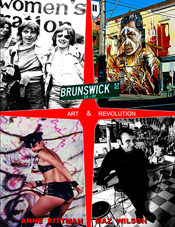 |
|
||||||||||||||||
Book Description
|
It
had to happen. Carnaby Street was the centre of fashion in the 60s. The
70s belonged to Haight-Ashbury’s flower children. Then in the 80s
Melbourne gave birth to Brunswick Street — epicentre of an emerging
arts movement. Three subcultures — grungers, bohemians and radical
feminists collided and brought forth a dynamic that changed the face of
the inner city. The meteoric rise of Brunswick Street was a cultural
explosion of art, theatre, fashion, grunge, music, drugs, diverse
sexuality, celebrity and politics. - Maz Wilson
Brunswick Street, Art & Revolution is the story of a street that became a culture. Written by Anne Rittman and Maz Wilson, it consists of a series of interviews and colour photographs with and of the people who brought about that transformation. It teems with characters: baristas, hair-cutters, potters, comedians, painters, singers, poets, restaurateurs and more. It evokes iconic places: the Black Cat, Pigtale Pottery, The Flying Trapeze, T F Much Ballroom, Bakers, Circus Oz , Scully & Trombone and the list goes on. It bursts with visual impact: performances, artworks, architecture and the Waiters’ Race for example. Here it is in its true form as a cultural, social and political history. It
was a pioneering spirit which created its own centre of gravity. Early
on the street had a frisson of excitement. Artists rubbing shoulders
with criminals in a quarter acre block.
- Rod Quantock.
Laughter is the shock absorber
of life!
- Tim McKew
It was love at
first coffee.
- Sandra Goldbloom Zurbo
|
|
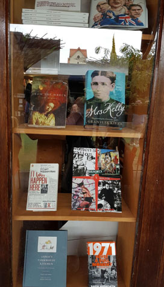 |
ISBN
9781876044978 (paperback) 2017 470 pgs Discontinued |
| ISBN
9781876044961 (hardback) 2017 470 pgs $88.00 - Australia (including postage) $130.00 - International (including postage) |
Book Sample
Play the video for
song and highlights of the book
Click here for a small sample of the book.
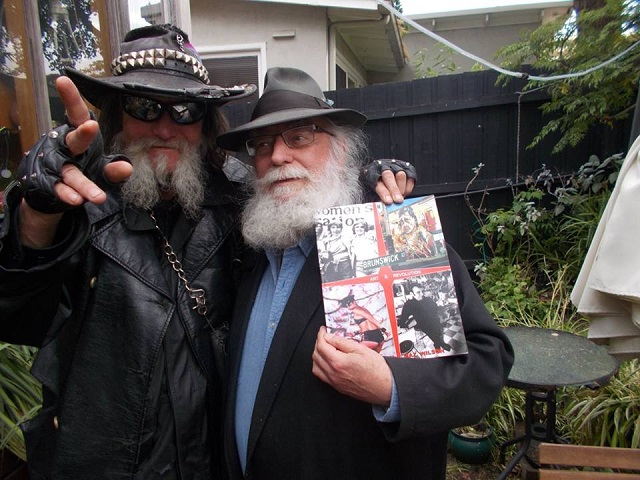
Book Launch
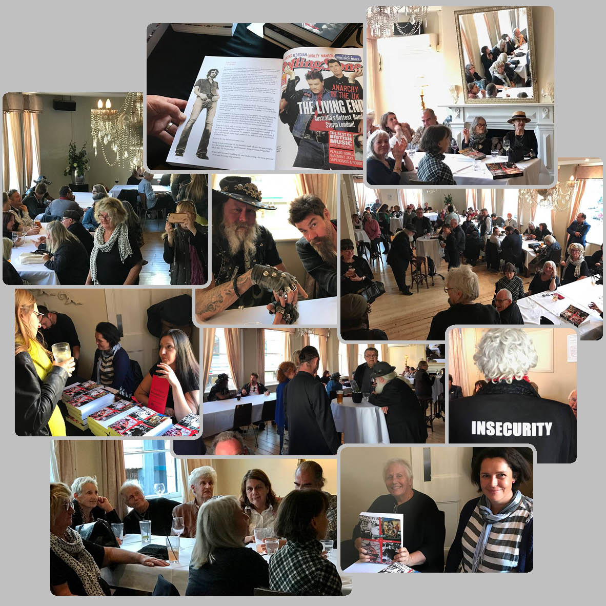
Pics from the launch, by Kim Tonelli
LAUNCHING BRUNSWICK STREET
Honoured to be the one to do this as there are many, many more of us still around, we who were there!
(Name people I see)
put up your hand if you were there?
You’re in the book. All of you are in the book!
So many of us are not here tonight, they’re stuck in traffic or they’re quaffing pinot noir in some Heavenly Restaurant at the End of the Universe… Bless!
Only someone who was there at the beginning could possibly have had enough hutzpah to write and encode a book about an era of history that belonged to so many weird, wonderful, talented, egocentric, revolting & revolutionary, legends in their own lunchtime, creative, freaks and geniuses.
Maz and Anne were there; they danced the dance, stepped over the line, climbed the mountain and fell through the cracks until eventually they stepped into another river, which we call Time and drifted on to their next journey. Some of us have the perspicacity to see that the past must be recorded before the memories fade, even though the street is still here & original enterprises still remain yet the Brunswick Street of this book has gone as it must- we, who know Melbourne have witnessed quite few roman candles burn brightly then slowly fade until ‘pop’.
But memory can be the very devil as Inga Clendinnen wrote:
(She’s not referring to Tronald Dump whose does not actually have a brain let alone a memory) but as with many epochs in history one person alone cannot record accurately every little nuance of the time.
So they came back with their goal clearly focussed- and they set to work, excavating the people, the minds, the moments and they let them have their page. It’s their words and their memories and I for one wouldn't dare to question any of it.
How do we explain this phenomenon! Before Brunswick Street crashed through the light barrier I see it as a dark basement harbouring an energy that when the time was right or the call came—like cicadas emerging from a deep sleep— burst forth like as if there was an underground river where the gods had deposited all their brilliant ideas, daring the poorest to find them.
All new life must begin in the DARK.
And often it pokes its head out a little too soon and has to retreat back down for a little more germination but then its ready and it releases itself to the light and to manifestation and sometimes holds its breath, or enters laughing, sometimes it vomits forth its inspiration or more often, silently sways into the milieu.
There happened to be a street in Melbourne that lay across this cosmic basement, this underground gallimaufry of compressed ideas, of fingers desperate to grasp the brush, the keyboard, the pen, the clay, the microphone, the audience!—And on this street lay a tramline: Number11—This in numerology is known as a Master Number—the 11 is the most intuitive of all numbers. It is instinctual, charismatic, dynamic and capable when its sights are set on a concrete goal. The 11 is the number associated with faith and psychics.
When its focus is not applied toward a goal, the 11 can be extremely self-sabotaging, stressed, conflicted and scattered.
And so, just over 36 years ago with that number eleven rolling on top of them these crazy, beautiful creatures broke through the ground and emerged into the extraordinary light—where they found that coffee was waiting for them.
Christ how blessed were we?
My journey in the Street began at T F Much Ballroom-I think. Then around 79 I ventured from Carlton to Pinder’s Bakers café, which sat in a rather neglected streetscape but that Pinder’s psychic ability. Ahead of his time. T F Much, Flying Trapeze and the Last Laugh. The streetscape reminded me of my student days in Carlton where 1963-66 in the Tower where later came the APG.
Let me take a description of that Brunswick street from the Book.
Jeff Raglas, musician, painter, designer (We were all mostly triple talented) wrote:
I’d returned, 7 months pregnant with my partner from UK. The first gig we got to go to at Collingwood Town hall, Jeff Toll was singing a song called, Dingoes eat babies in Australia and we didn’t have a bloody clue what he was talking about. Later we got the appalling story, appalling because the press were in a feeding frenzy and I’d forgotten what it was like to be a woman in Australia..
1981 I was due to give birth in July. We moved back into my house in Clifton Hill and prepared ourselves for a homebirth but I was hungry for the stage and the idea of performing hugely pregnant was pretty fascinating.
Rod and Mary and co were running The Comedy Café used to be the Flytrap in what was still the dead end of Brunswick St, where there were cavernous op shops and nowhere to get a latte. Can’t quite remember how but I found myself signed up for a show there. About 2 am one morning a few weeks later I sat at the bottom of the stairs and wrote the script of From Here to Maternity, channelling this appalling man who called himself Bill Rawlings.
He was the universal Aussie male, who quite simply sees it as his birthright to be superior to the entire female sex.
So there I was in the Comedy Café 8 months pregnant, huge, everywhere, slow, often in the show I admitted to having lactose poisoning of the brain, when I would just stop! People loved it. People love it when you stop and look at them.
It was a triumph and after the birth the after birth- a bit later I came back to perform upstairs in the Banana lounge- Mothers Courage where I took the audience thru a blow by blow description of the birth & painful slide show including a picture of the placenta—a Margherita Pizza—I think the mother has some Italian blood in her, a nappy changing competition. Etc. Outside the trams were going down the road they were going down the line, like a coal seam –bad analogy there sorry- like a bloodline, an artery DOWN to the place where the drums were beating! Brunswick street. What the fuck was happening DOWN there?!!
I’ll remind you of what was happening down there. The discarded jewels of the heavens had been born again out of that basement. For me in later years with all my shows at the Universal theatre Brunswick St became very familiar, and even now there’s little patches left- Mario’s, Scally and Trombone where I once donated a pair of earrings to Mary Lou. Sorry about that. I know no one would’ve ever worn tampons dangling from their ears. But she put them in the window just the same!
No one has actually yet collated or codified, studied or explored the sociological, cultural phenomena that happened in the eighties through to the nineties IN ONE SUBURBAN MELBOURNE ROAD—Brunswick Street—except for Anne Rittman & Maz Wilson, two women who without any financial support have worked their beautiful arses off in a project which we Australians are usually very bad at doing—recognising that we create history and change in the most extraordinary places and most importantly through the creative minds of artists!- not through wars and death and destruction do we come with this creativity to make history and change the world
WE come through our hearts and minds and our most creative of all tools—our hands. Show me your hands! Now put them together for these two women and for this work which is now—thanks to Black Pepper Publishers—is now launched!
by Sue Ingleton,
The Provincial Hotel 20/2/2017
The Provincial Hotel 20/2/2017
Honoured to be the one to do this as there are many, many more of us still around, we who were there!
(Name people I see)
put up your hand if you were there?
You’re in the book. All of you are in the book!
So many of us are not here tonight, they’re stuck in traffic or they’re quaffing pinot noir in some Heavenly Restaurant at the End of the Universe… Bless!
Only someone who was there at the beginning could possibly have had enough hutzpah to write and encode a book about an era of history that belonged to so many weird, wonderful, talented, egocentric, revolting & revolutionary, legends in their own lunchtime, creative, freaks and geniuses.
Maz and Anne were there; they danced the dance, stepped over the line, climbed the mountain and fell through the cracks until eventually they stepped into another river, which we call Time and drifted on to their next journey. Some of us have the perspicacity to see that the past must be recorded before the memories fade, even though the street is still here & original enterprises still remain yet the Brunswick Street of this book has gone as it must- we, who know Melbourne have witnessed quite few roman candles burn brightly then slowly fade until ‘pop’.
But memory can be the very devil as Inga Clendinnen wrote:
one appreciates the depths of
its character defects- its unreliability, its affront at being
questioned, its rage at being impugned, its incorrigible complacency
even when caught out.
(She’s not referring to Tronald Dump whose does not actually have a brain let alone a memory) but as with many epochs in history one person alone cannot record accurately every little nuance of the time.
So they came back with their goal clearly focussed- and they set to work, excavating the people, the minds, the moments and they let them have their page. It’s their words and their memories and I for one wouldn't dare to question any of it.
How do we explain this phenomenon! Before Brunswick Street crashed through the light barrier I see it as a dark basement harbouring an energy that when the time was right or the call came—like cicadas emerging from a deep sleep— burst forth like as if there was an underground river where the gods had deposited all their brilliant ideas, daring the poorest to find them.
All new life must begin in the DARK.
And often it pokes its head out a little too soon and has to retreat back down for a little more germination but then its ready and it releases itself to the light and to manifestation and sometimes holds its breath, or enters laughing, sometimes it vomits forth its inspiration or more often, silently sways into the milieu.
There happened to be a street in Melbourne that lay across this cosmic basement, this underground gallimaufry of compressed ideas, of fingers desperate to grasp the brush, the keyboard, the pen, the clay, the microphone, the audience!—And on this street lay a tramline: Number11—This in numerology is known as a Master Number—the 11 is the most intuitive of all numbers. It is instinctual, charismatic, dynamic and capable when its sights are set on a concrete goal. The 11 is the number associated with faith and psychics.
When its focus is not applied toward a goal, the 11 can be extremely self-sabotaging, stressed, conflicted and scattered.
And so, just over 36 years ago with that number eleven rolling on top of them these crazy, beautiful creatures broke through the ground and emerged into the extraordinary light—where they found that coffee was waiting for them.
Christ how blessed were we?
My journey in the Street began at T F Much Ballroom-I think. Then around 79 I ventured from Carlton to Pinder’s Bakers café, which sat in a rather neglected streetscape but that Pinder’s psychic ability. Ahead of his time. T F Much, Flying Trapeze and the Last Laugh. The streetscape reminded me of my student days in Carlton where 1963-66 in the Tower where later came the APG.
Let me take a description of that Brunswick street from the Book.
Jeff Raglas, musician, painter, designer (We were all mostly triple talented) wrote:
I’d have to say Brunswick Street
seemed like it was from another place and time …back then it reminded
me of a forgotten country town.. The faded grandeur of old Victorian
era shops and buildings, most shops looked deserted or barely open,
quite a few had their windows painted over with some sort of pale green
paint, with Greek lettering or perhaps the words ‘tailor’ or
‘manufacturer’ but most looked like nothing had happened for
quite a while. Old trams rattled up and down .. hardly anyone on them.
It was kinda cool and romantic.
I’d returned, 7 months pregnant with my partner from UK. The first gig we got to go to at Collingwood Town hall, Jeff Toll was singing a song called, Dingoes eat babies in Australia and we didn’t have a bloody clue what he was talking about. Later we got the appalling story, appalling because the press were in a feeding frenzy and I’d forgotten what it was like to be a woman in Australia..
1981 I was due to give birth in July. We moved back into my house in Clifton Hill and prepared ourselves for a homebirth but I was hungry for the stage and the idea of performing hugely pregnant was pretty fascinating.
Rod and Mary and co were running The Comedy Café used to be the Flytrap in what was still the dead end of Brunswick St, where there were cavernous op shops and nowhere to get a latte. Can’t quite remember how but I found myself signed up for a show there. About 2 am one morning a few weeks later I sat at the bottom of the stairs and wrote the script of From Here to Maternity, channelling this appalling man who called himself Bill Rawlings.
He was the universal Aussie male, who quite simply sees it as his birthright to be superior to the entire female sex.
So there I was in the Comedy Café 8 months pregnant, huge, everywhere, slow, often in the show I admitted to having lactose poisoning of the brain, when I would just stop! People loved it. People love it when you stop and look at them.
It was a triumph and after the birth the after birth- a bit later I came back to perform upstairs in the Banana lounge- Mothers Courage where I took the audience thru a blow by blow description of the birth & painful slide show including a picture of the placenta—a Margherita Pizza—I think the mother has some Italian blood in her, a nappy changing competition. Etc. Outside the trams were going down the road they were going down the line, like a coal seam –bad analogy there sorry- like a bloodline, an artery DOWN to the place where the drums were beating! Brunswick street. What the fuck was happening DOWN there?!!
I’ll remind you of what was happening down there. The discarded jewels of the heavens had been born again out of that basement. For me in later years with all my shows at the Universal theatre Brunswick St became very familiar, and even now there’s little patches left- Mario’s, Scally and Trombone where I once donated a pair of earrings to Mary Lou. Sorry about that. I know no one would’ve ever worn tampons dangling from their ears. But she put them in the window just the same!
No one has actually yet collated or codified, studied or explored the sociological, cultural phenomena that happened in the eighties through to the nineties IN ONE SUBURBAN MELBOURNE ROAD—Brunswick Street—except for Anne Rittman & Maz Wilson, two women who without any financial support have worked their beautiful arses off in a project which we Australians are usually very bad at doing—recognising that we create history and change in the most extraordinary places and most importantly through the creative minds of artists!- not through wars and death and destruction do we come with this creativity to make history and change the world
WE come through our hearts and minds and our most creative of all tools—our hands. Show me your hands! Now put them together for these two women and for this work which is now—thanks to Black Pepper Publishers—is now launched!
GRANT reads his poem B STREET to
ANNE at the Launch
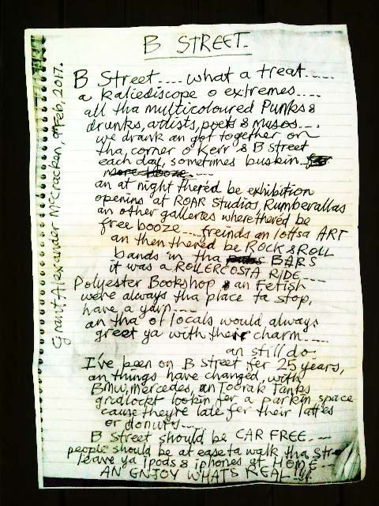 |
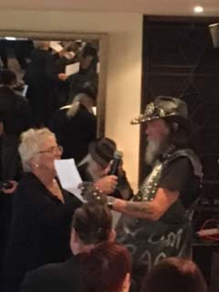 |
B Street
B Street—What a treat—
a kaleidoscope o extremes—
all tha multi-coloured Punks &
drunks, artists, poets & musos.
We drank an got together on
tha corner o Kerr & B Street
each day, sometimes buskin—
an at night there’d be exhibition
openins at ROAR Studios, Rumberallas
an other galleries where there’d be
free booze—friends an lottsa ART
an then there’d be ROCK & ROLL
bands in tha BARS
it was a ROLLERCOSTA RIDE—
Polyster Bookshop an Fetish
were always the place ta stop,
have a yarn—
an tha locals would always
greet ya with their charm—
an still do.
I’ve been on B Street fer 25 years,
an things have changed, with
BMWs, Mercedes, an Toorak Tanks
gridlokt lookin for a parkin space
cause they’re late for their lattes
or donuts—
B Street should be CAR FREE—
people should be at ease ta walk tha Street
leave ya ipods & iphones at HOME—
AN ENJOY WHAT’S REAL!!!
B Street—What a treat—
a kaleidoscope o extremes—
all tha multi-coloured Punks &
drunks, artists, poets & musos.
We drank an got together on
tha corner o Kerr & B Street
each day, sometimes buskin—
an at night there’d be exhibition
openins at ROAR Studios, Rumberallas
an other galleries where there’d be
free booze—friends an lottsa ART
an then there’d be ROCK & ROLL
bands in tha BARS
it was a ROLLERCOSTA RIDE—
Polyster Bookshop an Fetish
were always the place ta stop,
have a yarn—
an tha locals would always
greet ya with their charm—
an still do.
I’ve been on B Street fer 25 years,
an things have changed, with
BMWs, Mercedes, an Toorak Tanks
gridlokt lookin for a parkin space
cause they’re late for their lattes
or donuts—
B Street should be CAR FREE—
people should be at ease ta walk tha Street
leave ya ipods & iphones at HOME—
AN ENJOY WHAT’S REAL!!!
Grant
Alexander McCracken, 9th Feb, 2017
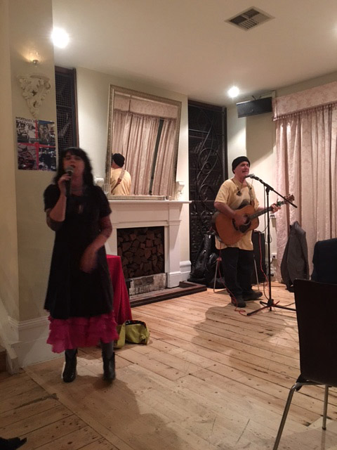
Lyn Van Hek & Joe Dolce providing the entertainment
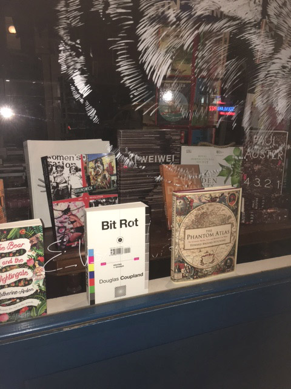
The book featured in the window of the Brunswick Street Bookstore
Articles, Reviews and Events
Brunswick Street: Art and Revolution
An event hosted by Yarra Libraries and the Ewing Trust
Kevin Pearson talks about the book
with a Video Slide Presentation by Wolfgang Schlueter
Fitzroy Town Hall Reading Room, 11 April 2019
Librarian's Report
Brunswick Street: Art and Revolution
Wednesday 11 April 2019. 6:30 - 7:30pm
Fitzroy Town Hall Reading Room
Report by Librarian Sam Boivin
On Wednesday 11 April, Yarra Libraries and the Ewing Trust hosted Kevin Pearson and the team at Black Pepper Publishing to talk about the very popular local history title Brunswick Street: Art & Revolution. The book is the story of a street that became a culture. Written by Anne Rittman and Maz Wilson, it consists of a series of interviews and colour photographs with and of the people who brought about that transformation.
Kevin’s first memory of Brunswick St was of driving down it in the passenger seat of his father’s car. His father looked at him and told him “Don’t ever get out of the car on Brunswick Street!’ Kevin has been intrigued ever since. [In fact, that memory is Rod Quontok’s] Kevin spoke with great expertise and humour about the intersecting histories of art, crime, sexuality and class politics which converged along Brunswick St in the 1970s and 1980s.
82 people attended the talk, and many books were sold, including the #1 numbered print which was auctioned off for over $300.00. It was a fun night full of laughs.
Thanks to Alex, Cory and Sarah for making the event such a success, and to Kylie for helping out on the night!
The Event
Sam
and Kevin at the event
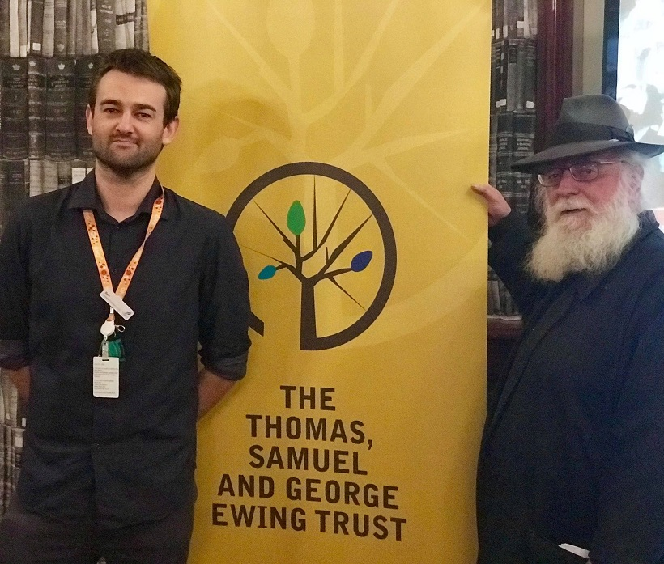
Kevin talks to the crowd
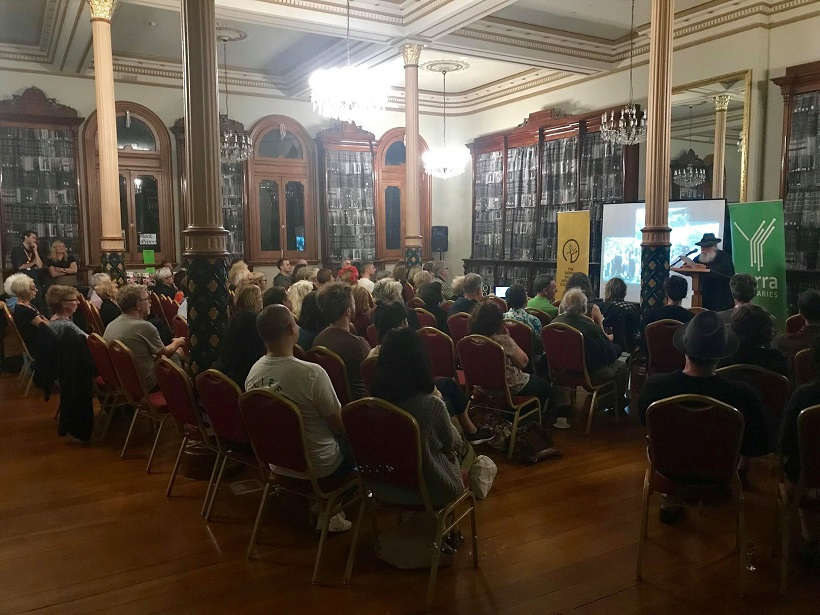
The Talk
About the book by Kevin Pearson
As the front man for Black Pepper Publishing, I am usually introducing a speaker to launch a book. I would begin by saying Good evening and welcome. So I say it here: Good evening and welcome to the Fitzroy Town Hall. More importantly, welcome on behalf of the Fitzroy Library. Libraries contain multitudes.
My father worked as a clicker in the boot trade in factories in neighbouring Collingwood. I was warned in my youth to stay away from there and Fitzroy. They were full of ruffians, molls and gangsters.
Commedian Rod Quantok had a similar warning:
My first memory of Fitzroy was
in the 60s driving down Johnston Street with my father. Suddenly he
said, whatever you do, don’t get out of the car. It sounded like a
warning to a small boy and coloured my view of Fitzroy.
But look at me now. I am here.
And I am here to praise a book. Brunswick Street Art & Revolution by Anne Rittman and Maz Wilson. As this black and white photo from the time indicates, they were part of what we now call ‘first wave feminism’, as were so many participants, both male and female, straight or gay, participants in the breakout efflorescence that their book so wonderfully details.
Brunswick Street had been a major arterial road and trade route from the early days of the colony. There were market gardens further out. At the period covered by our book it was, in the beginning a hub of factories and small manufacturing when we still had a viable textile industry and boarded-up shopfronts.
The inner-Melbourne suburb of Fitzroy was, despite slum clearance, still largely "a backwater of seedy pubs and sleazy brothels" when Maz Wilson and Anne Rittman first moved there in 1975, as Fiona Capp put it in The Age She also hits on the first attraction: the rent was cheap. There was also an aesthetic appeal; the very seediness was attractive to the rebellious young escaping the stifling beige conformity of country or outer suburb.
Maz Wilson formulated the rationale of the book and gave it a context:
It had to happen. Carnaby Street
was the centre of fashion in the 60s. The 70s belonged to
Haight-Ashbury’s flower children. Then in the 80s Melbourne gave birth
to Brunswick Street— epicentre of an emerging arts movement.
Three subcultures – grungers, bohemians and radical feminists collided and brought forth a dynamic that changed the face of the inner city. The meteoric rise of Brunswick Street was a cultural explosion of art, theatre, fashion, grunge, music, drugs, diverse sexuality, celebrity and politics.
Three subcultures – grungers, bohemians and radical feminists collided and brought forth a dynamic that changed the face of the inner city. The meteoric rise of Brunswick Street was a cultural explosion of art, theatre, fashion, grunge, music, drugs, diverse sexuality, celebrity and politics.
Brunswick Street, Art & Revolution is the story of a street that became a culture. It consists of a series of interviews and colour photographs with and of the people who brought about that transformation. It teems with characters: baristas, hair-cutters, potters, comedians, painters, singers, poets, restaurateurs florists and more.
It evokes iconic places: the Black Cat, Pigtale Pottery, The Flying Trapeze, T F Much Ballroom, Bakers, Circus Oz , Scully & Trombone and the list goes on.—It bursts with visual impact: performances, artworks, architecture and the Waiters’ Race for example. The book is as vibrant as the characters, shopkeepers, and places it covers were. It is a record and a celebration.
Anne and Maz studied the writing and editing course at RMIT and assembled the core of the book we now have. They published it as a coffee table book with a price of $400. They later approached Black Pepper Publishing to gauge our opinion. When we saw it we felt it needed to be more accessible. It’s our history and for many of you it’s your history.
Rod Quontock again:
It was a pioneering spirit which
created its own centre of gravity. Early on the street had a frisson of
excitement. Artists rubbing shoulders with criminals in a quarter acre
block.
It is an expensive book to produce, having many images all of which must be laid up with surrounding text. We sought funding to underwrite the expense. Firstly the Australia Council. Refusal. We next tried crowdfunding. Here I should tell you if you try funding by that model, be careful. We did not reach our designated target, so the money wasn’t allocated to us. However, we had the email addresses of those who had pledged support. The each purchased a book. But it was not enough. So Hannah contributed the necessary funds from her modest inheritance.
The book needed re-formatting entirely. It would take us months. At the same time we added new entries and accompanying images. In the process we transformed it from a coffee table art book into what it really is—a social, political and cultural history. It retains all its visual impact it is now presented in its true form. And we made it affordable.
Originally, we produced two versions: A hardback numbered & signed limited edition of 100. It retailed at $180.00. And a paperback that was $75.00.
That hardback was a deluxe edition. It had premium colour, that is full gloss images. We have sold out of all copies bar one. That one is the first numbered copy. It is that collector’s item we will auction after this presentation.
[That book was auctioned, with the irrepressible Sue Ingleton as auctioneer. It sold for $371.00.]
We now only sell a new hardback that combines the virtues of both earlier editions. It has standard colour, that is matt. We actually feel this fits more truly with that social history bent of the book.
As we follow the images in the sideshow, I shall read a random highlights reel from the text of Brunswick Street, Art & Revolution.
As she is one of the authors, we begin with Anne Rittman:
Where to start, and with what?
That was the question. We had counted 6 rooms upstairs. ‘We’ll turn
those into studios’ I said, ‘We can pay our rent that way’. Renting out
rooms is in my blood. Mazza used to call me Rackman after the notorious
landlord who operated in London in the 60s. Actually it was a legacy
from my grandmothers who both rentedout rooms to make ends meet during
the depression and the war, and as none of us had any money this looked
like the only thing to do in this situation. It was the renting of
these rooms to women, that naturally created a community of artists
which thrived here at Pigtale for well over a decade. The community was
not planned it just naturally evolved and became one of the special
features of our business. Sue Vaughan, a painter, was the first artist
to rent a studio followed by many more. Jane Sinclair, Sandra Bowkett,
Lene Jakobsen, Marg Wade, Tanya Robinson and Sue Pearson, to name a few.
Over time our ceramics changed from handbuilt sculptures to offbeat slipcast teasets, vases and dinnersets. We also included hand thrown work in our repertoire by hiring ‘throwers’ to produce runs of mugs, plates and platters designed by ourselves. We decorated our work with brilliantly coloured underglazes, painted on by hand, producing a unique and much sort after range of ceramics.
In retrospect what I gained from working at Pigtale was this, put your mind to it and you can do anything. We were a bunch of untrained potters, largely unemployed, with almost no money, but we found Brunswick Street and created a sanctuary for womento be creative, in a serious sense, despite the world’s opinion of how women should conduct their lives.
And we had fun!
Over time our ceramics changed from handbuilt sculptures to offbeat slipcast teasets, vases and dinnersets. We also included hand thrown work in our repertoire by hiring ‘throwers’ to produce runs of mugs, plates and platters designed by ourselves. We decorated our work with brilliantly coloured underglazes, painted on by hand, producing a unique and much sort after range of ceramics.
In retrospect what I gained from working at Pigtale was this, put your mind to it and you can do anything. We were a bunch of untrained potters, largely unemployed, with almost no money, but we found Brunswick Street and created a sanctuary for womento be creative, in a serious sense, despite the world’s opinion of how women should conduct their lives.
And we had fun!
Pigtale ended in 1994.
Of course Pigtale were not the only ceramists in the area. Who could forget Joe Raneri of Raneri Ceramics who created the famous multi-coloured tiled benches that grace the Street. Or all those who manufactured the distinctive signage that adorns the many shops, such as Vasette or The Fitz.
Miriam Robinson tells of the emergence of what would become a celebrated coffee scene:
Bakers was the first café to
open in Brunswick Street. A lot of people think the Black Cat was
first, but I remember Henry Maas, from the band, the Bachelors from
Prague, coming into Bakers for a coffee and a bite to eat. His clothes
were covered in paint and plaster and his hair was full of dust! He
told us how he had won a few dollars on a ‘scratchie’ lottery ticket
and had decided to open a café. He found a place he could afford and
started doing it up himself, using second hand furniture and odds and
ends he got from op shops and so on. Of course Henry always had great
artistic flair, so what he did out of necessity, soon became a much
copied aesthetic style.
The American comedian Gerry Seinfeld was at the height of his world-wide fame. He had a self-named television show in which the stand-up comedian was attempting situational comedy. He was famous. Such a man, in the American tradition, the capitalist, not the democratic one, had minders. They would prepare the way for his approach.
Mario de Pasqualle takes up the story:
Marios as an institution has
always been inclusive of all. We’ve always been of the opinion that
‘everybody’s money is the same colour’. Our egalitarianism was
highlighted when the American comic, Jerry Seinfeld, visited our
shores. It was peak time when a phone call came through to the café
from one of Jerry’s entourage wanting to book a table for Jerry
Seinfeld and a party. He was told that we don’t take bookings and that
Jerry would have to line up with everybody else. So he didn’t come. The
following day the concierge at the Regent where Jerry was staying rang
to express his outrage at our treatment of the star. I got off the
phone and there was Palz Vaughan, the gossip columnist. I told her the
full story. The following day it was all over the media. Even the BBC
was on the phone.
He had come up against the then still operating Australian ethos of the fair go.
As Sandra Goldbloom Zurbo who established Dead Set, the first digital typesetter in Victoria in Brunswick Street said. It was love at first coffee.
Jake Argyll a technician (back room person) for The Women’s Circus gives a fascinating account of how a show actually gets to go on:
I recall working on a show (for
the Performing Older Women’s Circus) where we created a beautiful and
intensely moving scene with two performers, one seated in a wheelchair,
the other acro-balancing on the woman who was seated. They separate and
the acro-balancer walks to the front of the stage, each performer in
their own pool of light created by a single light above each of them.
The woman in the wheelchair dies (as I recall), the light fades on her
as the acro-balancer starts to crumble at the front of the stage. As
she feels the pain of loss, the single light above her begins to slowly
fade (over about 30 seconds) until the stage is black. I could hear
sobbing in the audience next to me and I was wiping tears from my eyes
trying to read my cue sheet.
Of course not all went off as planned Lin van Hek tells a story of the fate of her paintings at an exhibition at Rumberallas café/restauraunt and art gallery:
Not to be out done, I also had
an incident with a friend who had posed for my moody nudes. She freaked
out at herself in my six-foot high extravagant worship of her
translucent pale body. She insisted that I take it down even though she
had signed a release form. In the shadowy province of friendship I knew
that I must obey and carried the great ‘bloody’ masterpiece out back
where the waiters were filling wine glasses. There was a huge crowd and
as usual chaos. The night was memorable for me because an eccentric
patron purchased all of my pieces. What remained was that lovely nude
in the pantry. Unfortunately it went missing and I often wonder where
it is today.
Prominent in the development the music scene on the Street was The Punters’ Club (now the more anodyne Bimbos) Betty Wade-Ennis describes its evolution:
The street was bohemian, bold
and exciting. The gay community, the Koori community, the alternative
community, the migrants in the high rise commission flats, all
contributed to and coexisted in Brunswick Street. Artist’s studios,
cafés, galleries and interesting shops sprang up such as Rhumbarellas,
Marios, The Fitz, Pigtale, the Vegie Bar and Scally and Trombones.
The growth of The Punters was an organic process incorporating the groundswell of live music and the street scene. It was the place to be, the bar staff came from the street and the two became one around the pool table in that grungy front bar. Linda Gebar. skilfully steered the band bookings and established the venue as host to the abundant, independent, and more importantly the original bands of the day and the dedicated community of punters soon followed.
Night after night. Band and after band. Linda should be credited for launching the careers of many, Frente!, Magic Dirt, Something for Kate, Spiderbait, the list is endless, absolutely everybody! Many of today’s Who’s Who played the Punters.
The growth of The Punters was an organic process incorporating the groundswell of live music and the street scene. It was the place to be, the bar staff came from the street and the two became one around the pool table in that grungy front bar. Linda Gebar. skilfully steered the band bookings and established the venue as host to the abundant, independent, and more importantly the original bands of the day and the dedicated community of punters soon followed.
Night after night. Band and after band. Linda should be credited for launching the careers of many, Frente!, Magic Dirt, Something for Kate, Spiderbait, the list is endless, absolutely everybody! Many of today’s Who’s Who played the Punters.
It was wall-to-wall crowded and not for the faint hearted.
And there were artists galore, it seemed, coming out of woodwork as shared art spaces were found and Galleries sprang up to support them or be supported by them. There were galleries for painters, sculptors, jewellers, printmakers and, for a time, the Women’s Gallery.
Although I have more highlights I could relate, I shall leave it there.
Helenka Wargon commented on the small Age review by Fiona Capp I quoted from earlier:
Just quietly, it’s a shame the
review wasn’t meatier, speaking more on the cultural contribution this
collection of people made to Australia, rather than focusing on cheap
rent and seedy pubs. So many of these so called ‘seedy pubs’
nurtured poets and artists of all sorts that mingled together exchanged
ideas on art, culture, Australian identity. Indeed, it was
the ONLY place in Melbourne where ANYONE could turn up and discuss
ideas such as these without having an academic degree, without a ticket
to a ‘gentlemen’s club’. It was an absolute breath of fresh
air and something utterly lacking right now in Melbourne.
There was so much more she could make of this book; how it stands as an
inspiration to this age we’re living in, as a testimony to what can be
born of an area where artistic expression is welcomed and
invited. Indeed, this now gentrified highly expensive real
estate sits ENTIRELY off the back of its former spirit.
But things change. Heydays pass. In January 2016 we had the ice-propelled murder of Gordon Harvey at Fetish. The iconic hippie shop was torched.
The last image in Brunswick Street, Art & Revolution is from the pocket handkerchief Whitlam Square. It is there deliberately. It simply reads ‘It’s Time’.
It is hard for anyone who did not live through it, to imagine what a breath of fresh air, even while they sewered the suburbs, the Whitlam Government was. Even given its occasional chaos and what some would regard as its disgraceful end, it is a testament to its cultural force the all Australian politics since then has been about dismantling its achievements.
It is the duty of every decent citizen to vote out the current destructive if vaporous federal government. [This statement was roundly applauded.]
I leave you with a poem from John Ashton, one of the original founders of Fetish.
Fitzroy mon amour
Waking
from broken dreams, images collide,
Fiction ain’t all it seems (and the truth’s not cut and dried)
Geography is shifting sand and history deceit,
No bail appeal, held on remand in the case of Brunswick St
A history lesson in urban change of progress in reverse
It’s a middle class revolution between the poet and the purse
A thousand aliens arrive in cafés of the neat,
And Gucci garb and four wheel drives are seen on Brunswick St
Money buys a better time (insult without intent)
But what about the painter who can’t afford the rent?
It lacks a social leaning, like art without critique
It’s glamour without meaning; Friday, Brunswick St
Medium density dogbox homes, no room to swing a cat
No kids, no pets, no dirt, no welcome on the mat
The empty rooms cry out for love, the sex and food are fast,
The fashion price is mortgage bound in the slums of future past
Tolerance came easy when I had a full time job
I used to be parochial, now I’m a full time snob
The mythology of Brunswick St I carry like a curse
And I can’t find an empty seat from the Derby to the Perse
Pictures from an exhibition, glimpsed from a passing tram
As the fifteenth beer at one am reminds me who I am
Lost in space on Planet X this town became a toy
The bastard son of urban planning, aptly named Fitzroy
The lifestyle is expensive (who said that life was cheap?)
For insurance comprehensive, save money, stay asleep
From rough around the edges, to sanitized and sleek
Welcome to La Rue Regret, Exit Brunswick Street
Fiction ain’t all it seems (and the truth’s not cut and dried)
Geography is shifting sand and history deceit,
No bail appeal, held on remand in the case of Brunswick St
A history lesson in urban change of progress in reverse
It’s a middle class revolution between the poet and the purse
A thousand aliens arrive in cafés of the neat,
And Gucci garb and four wheel drives are seen on Brunswick St
Money buys a better time (insult without intent)
But what about the painter who can’t afford the rent?
It lacks a social leaning, like art without critique
It’s glamour without meaning; Friday, Brunswick St
Medium density dogbox homes, no room to swing a cat
No kids, no pets, no dirt, no welcome on the mat
The empty rooms cry out for love, the sex and food are fast,
The fashion price is mortgage bound in the slums of future past
Tolerance came easy when I had a full time job
I used to be parochial, now I’m a full time snob
The mythology of Brunswick St I carry like a curse
And I can’t find an empty seat from the Derby to the Perse
Pictures from an exhibition, glimpsed from a passing tram
As the fifteenth beer at one am reminds me who I am
Lost in space on Planet X this town became a toy
The bastard son of urban planning, aptly named Fitzroy
The lifestyle is expensive (who said that life was cheap?)
For insurance comprehensive, save money, stay asleep
From rough around the edges, to sanitized and sleek
Welcome to La Rue Regret, Exit Brunswick Street
= = = = =
A song from the era Dada Café by Sergio Garcia and Dave Robinson took us out.
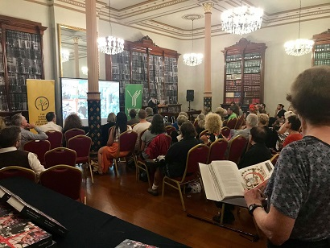
Video Slide Presentation
Art and Revolution
review by Grazyna Zajdow
arena MAGAZINE No 151, December 2017
‘They call it paradise, I don’t know why
You call some place paradise, kiss it goodbye’
—‘The Last Resort’,
Don Henley and Glen Frey
Brunswick Street, Fitzroy, runs south to north from the edge of central Melbourne at Victoria Parade with its mixture of grand Victorian terraces, parks, churches and ugly mid-twentieth-century office buildings to Queens Parade. North of Queens Parade it enters North Fitzroy; while readers may not think this is particularly important, it is to the denizens of Melbourne’s inner north, and it’s an important distinction in this epic compendium of interviews and photographs about this remarkable street. Though limited by time and space, as any book about a street must be, this book is as chaotic and lively as the street itself. And while I think that Brunswick Street is in need of a social history in the manner of Janet McCalman’s biographies of Richmond (Struggletown) and Glenferrie Road, Kew (Journeyings), that can hardly be reason for criticising this particular tome. The authors, or curators really, write that ‘three subcultures—grungers, bohemians and radical feminists—collided and brought forth a dynamic that changed the face of the inner city. The meteoric rise of Brunswick Street was a cultural explosion of art, theatre, fashion, grunge, music, drugs, diverse sexuality, celebrity and politics’. I certainly wouldn’t argue with that.
I guess I need to out myself here. My relationship to Brunswick Street is long indeed, though I was brought up on the other side of the Yarra River. My father had his first job in Australia in one of the sweatshops that lined the street in 1959. In the early 1970s, more than one of my friends had to visit the STD clinic in Gertrude Street, less than a block away from Brunswick Street. In 1979 I was working for a friend who booked live bands into the Aberdeen Hotel in North Fitzroy (a venue that became upmarket apartments in the late 1980s) and we spent our days in the first of the cafes that marked the effective beginning of Brunswick Street’s glory days. Our office was Baker’s, just north of Johnston Street. This marked us off from the black-clad gang at the Black Cat, two blocks away south of Johnston. I have an attachment to the place that might cloud my judgement of this book, but since so much of Melbourne’s artistic and cultural life has some measure of relationship to it, I don’t feel too compromised.
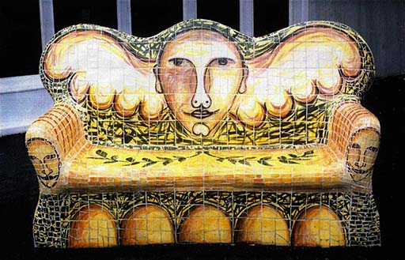
One of Giuseppe Ranwri''s iconic tiled seats, Brunswick Street
Brunswick Street: Art and Revolution does not seem to have a clear chronology or geographic structure. It’s mostly a series of interviews with around a hundred people and illustrated with what seems to be thousands of photographs. It begins with Greg Hunt and the Ferret Affair at the T. F. Much Ballroom. T. F. Much and its slightly later incarnation, Much More Ballroom, were held at Cathedral Hall at the southern end of the street. Cathedral Hall is now a renovated nineteenth-century lecture theatre belonging to the Australian Catholic University, but in the early 1970s it was a run-down venue that was perfectly placed to host Daddy Cool, Company Caine, Captain Matchbox and other bands that led to the golden years of Australian rock. The interiors were lit by the glorious light shows of Hugh McSpedden. Marijuana was freely smoked and, not long after, Marijuana House was established down the road. By 1973 Much More had morphed into the Melbourne Artists Workshop on the other side of the river in Prahran—but not before it gave birth to Soap Box Circus and then to Circus Oz.
Just
as the working-class population of the fifties and sixties would no
longer recognise the place, so the punks, junkies, gays, lesbians,
artists, performers and musicians would find recogniton hard now.
T. F. Much and Much More were run by John Pinder and Bani McSpedden. John Pinder and others set up the Flying Trapeze theatre restaurant further north of Cathedral Hall. It can be safely said that Australian comedy, as we know it now, was a direct spawn of the ‘Flytrap’. Rod Quantock, Mary Kenneally, Sue Ingleton, Tim Scally, the Whittle Family and hundreds more comedians, actors and performers started, or at least performed, there. Without the Flytrap there would be no Melbourne Comedy Festival. John Pinder went on to open The Last Laugh on the Collingwood side of Smith Street, and other venues like the Comedy Club and Marijuana House hosted hundreds more acts. For many years the Melbourne Comedy Festival had its offices on the second floor of the building at the corner of Brunswick and Johnston Streets, above what is now the 7-Eleven.
Once the Pram Factory (which housed the Australian Performing Group—see Bill Garner’s essay in this issue) in Carlton closed, many of the performers and artists migrated a kilometre east to Fitzroy looking for affordable spaces to live and work in. Apart from the comedy venues, theatre also opened up. Just around the corner in Victoria Street, the Universal theatre and Universal workshop were set up in 1979 in an old shoe factory. Within the one building were the theatre, the workshop, RRR community radio, a food co-op and a naturopathy school. Robyn Archer’s A Star Is Torn was first performed there, as was Wogs out of Work.
Art of all sorts flourished along the strip in the eighties and nineties. Roar Studios was an artists’ cooperative that included David Larwill, Richard Birmingham, Mark Schaller, Sarah Faulkner, Jill Noble, Judi Singleton and others. It was a studio and gallery space and made a huge impact on the Melbourne art scene. Further north was Pigtale Pottery and the Women’s Gallery. From there burst an explosion of ceramic and pottery art from women artists that included Deborah Halpern, Pauline McDougall, Marj Renni and many others.
With the movement of artists of all sorts into Brunswick Street looking for cheap studio and rental accommodation came the cafes. The Black Cat, Bakers (where my first husband worked in the guise of a rude Italian waiter berating hung-over customers on a Sunday morning), Marios, Rhumbarella’s and so many others acted as gallery spaces as well as cheap eateries. Jo Olver at Marios tells the story that made Brunswick Street world famous. Marios had a no-bookings policy (as did most of the others), so when Jerry Seinfeld’s people rang up they were told that they would have to take their chances just like everybody else. He never came and some people revelled in the audacity of saying no to the world’s most famous comedian. I remember it made front page of The Age.
The ferment of artists, musicians and cafe culture was a feast for the senses. Many people in the book try to describe what the Fringe Festival parades looked like, but the experience is very hard to transcribe onto the page. Even the photos don’t do it justice. The freedom that everyone felt to express themselves (regardless of their lack of talent) was invigorating. Acrobats on verandah roofs, dying men dancing in their huge yank tanks, followed by brass bands playing whatever. Even the local plant nursery was part of this, and upstairs exhibitions of garden art were held. Every year at the end of the football season there was an exhibition of football art in the Artists’ Garden: Wayne Carey painted as Michelangelo’s David, Billy Brownless and Gary Ablett in all their glory. There was even a painting of a woman giving birth to a football or her clitoris as football—I am not sure which.
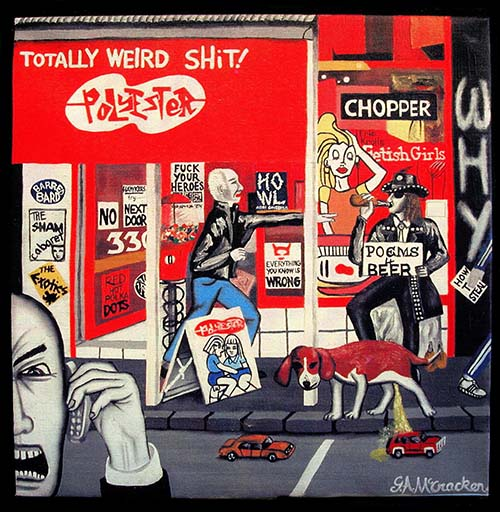
Polyester Books, Brunswick Street Painting by G. A. McCracken
If
there ever was a marvelous Melbourne in the twentieth century,
Brunswick Street was central to it.
Every human activity seems to contain the genesis of its own destruction and that is obvious here as well. Roar Studios was in a building that was owned by a woman who worked incredibly hard in the sixties to save the beautiful but decaying Victorian terraces. This led directly to the gentrification of the inner city that kept the buildings but destroyed the community. Hotels like the Evelyn, Provincial, Champion and Rob Roy that first supported the working-class population of the time and then welcomed the punks and addicts of later years finally succumbed to the demands of new residents to clean up their acts. The same people who were driven from nearby Carlton because of rising rents were then driven away from Fitzroy for the same reason. Tourists from the suburbs wanting to see the nascent gay and post-punk scenes invaded the street at weekends, and the various shops and small businesses were overtaken by restaurants and more cafes. While there is still life there, it is a shadow of itself. This is portrayed in many of the poignant stories and reflections in the book—nostalgic tales of past glories.
I began above with a quote from The Eagles, a band that began with great spirit in the 1970s and ended as a bloated vision of rock-and-roll hell. In its success lay its destruction. The 400 or so pages of this book tell a similar story in words and photos. Just as the working-class population of the fifties and sixties would no longer recognise the place, so the punks, junkies, gays, lesbians, artists, performers and musicians would find recognition hard now. But if there ever was a Marvellous Melbourne in the twentieth century, Brunswick Street was central to it.
Tolerance came easy
when I had a fulltime job
I used to be parochial, now I’m a fulltime snob
The mythology of Brunswick Street I carry like a curse
And I can’t find an empty seat from the Derby to the Perse…
Welcome to La Rue Regret, exit Brunswick Street
I used to be parochial, now I’m a fulltime snob
The mythology of Brunswick Street I carry like a curse
And I can’t find an empty seat from the Derby to the Perse…
Welcome to La Rue Regret, exit Brunswick Street
—John Ashton
ABC Radio MELBOURNE
Evenings
with Lindy Burns, Thu 6 Jul 2017, 7:00pm (22min 42sec)
From the Flying Trapeze to the Punters Club a new book called "Brunswick Street: Art and Revolution" celebrates the transformation of Brunswick Street, Fitzroy in the 1980s.
The book's co-author Anne Rittman joined Lindy for a trip down memory lane.
To listen to the interview go to: http://www.abc.net.au/radio/melbourne/programs/evenings/anne-rittman/8685710
or play it here:
Another interview with Anne about the book that you may like to listen to is at the following link:
Anne's interview starts 1 hour and 23 minutes into the show, running for about 25 minutes.
Trouble Mag June 2017
Fitzroyalty
INTRODUCTION by Steve Proposch
THE END OF DIVERSITY? by Avatar Polymorph
"In Melbourne this left places like Fitzroy, Collingwood, Richmond, North Melbourne and even Carlton virtually gutted. Flemington, Kensington and Footscray fared not much better with larger and stronger industrial infrastructure close at hand, but on the North East side the times were economically dire indeed. Of course, nothing lasts forever. What happened next occurred first in Carlton, to a small degree, and caught fire in Fitzroy. It is a well-documented social phenomenon that occurs over and again, all around the world, in a fairly similar pattern every time such conditions occur. It is a phenomenon that is spearheaded by artists, writers, actors, potters and creative weirdos of all kinds, who move in to take advantage of low rents and large, industrial spaces that nobody wants or cares about and where they remain free to live as they choose, make what they choose and earn what they choose in the way they choose to earn it, where fewer if any people care enough to try telling them how to live. But as surely as this movement begins it tolls its own death knell, known as Gentrification, which occurs without fail about ten to twenty years later, when all of a sudden the suburban mass begins to hanker for culture, and realises that the inner city is alive with it. Artists are thick on the ground in there."
"In Fitzroy the phenomenon centred around Brunswick street, which is the subject of a new book by Black Pepper publishing, Brunswick Street: Art & Revolution. The book is filled with the stories of artists and creatives who lived a beautiful life in Fitzroy in the 70s and early 80s, a life full of community and fresh, brave culture, in a place where they could – all too briefly – almost believe they were free."
For the complete article go to: http://www.troublemag.com/fitzroyalty/
PICK OF
THE WEEK |
Brunswick Street: Art &
Revolution
ANNE RITTMAN AND MAZ WILSON The inner-Melbourne suburb of Fitzroy was, despite slum clearance, still largely "a backwater of seedy pubs and sleazy brothels" when Maz Wilson and Anne Rittman first moved there in 1975. But the rent was cheap, drawing writers, artists, musicians, performers and radical activists who would transform the suburb and its main drag, Brunswick Street, into a vibrant bohemian enclave. Venues, galleries and shops such as Rhumbarellas, the Black Cat, the Flying Trapeze Cafe, the Troubadour, Roar Studios, the Artist's Garden, Polyester Records with its provocative catchline "Totally Weird Shit", Misfit, Fetish and many more fostered and reflected the street's alternative ethos. The diverse voices, the spirit and daring of that era are captured in this exuberant landmark anthology of recollections, rants and raves by those who were there when it all began. |
COMMENT
by Helenka Wargon
Just quietly, it’s a shame the review wasn’t meatier, speaking more on the cultural contribution this collection of people made to Australia, rather than focusing on cheap rent and seedy pubs. So many of these so called ‘seedy pubs’ nurtured poets and artists of all sorts that mingled together exchanged ideas on art, culture, Australian identity. Indeed, it was the ONLY place in Melbourne where ANYONE could turn up and discuss ideas such as these without having an academic degree, without a ticket to a ‘gentlemen’s club’. It was an absolute breath of fresh air and something utterly lacking right now in Melbourne. There was so much more she could make of this book; how it stands as an inspiration to this age we’re living in, as a testimony to what can be born of an area where artistic expression is welcomed and invited. Indeed, this now gentrified highly expensive real estate sits ENTIRELY off the back of it’s former spirit.
Celebrating Brunswick Street's
glory days, heart and soul
by Carolyn Webb,
The Sydney Morning Herald 25/2/2017
Also appearing in The Age and Newcastle Herald
by Carolyn Webb,
The Sydney Morning Herald 25/2/2017
Also appearing in The Age and Newcastle Herald
"For a few short years, this vibrant neon strip with an edgy mix of grunge pubs, retro cafes, art galleries, comedy clubs, experimental theatre and bookstores was the hottest ticket in town."
This was Brunswick Street, Fitzroy, in its heyday, as described by author Maz Wilson in the foreword to a new book. Nowadays it's a different place altogether. Brunswick Street: Art and Revolution, which she co-authored with Anne Rittman, tells how cashed-up entrepreneurs and fashionistas moving in, and tourists from the suburbs, have quelled the street's bohemian spirit.
etc.